Chat
Approved application · approved logoEvery image below is an actual canonical PNG. Open an image for its full resolution. These are authored design scenes, not current-app browser captures.
A slower start
chat-populatedActions and implementation pointers
+ New page · Journal · Explore · All pages · ⌄ · Reflections · › · Reading · Turn into a page · Explore this note · Ask Journl · Linked context · A slower start · Copy · Retry · Instant ⌄ · ↑ · Entries · Timeline · Nov 16 · History · Close · Instant · Thinking
apps/web/src/components/assistant-ui/thread-components.tsxapps/web/src/components/assistant-ui/thread-sources.tsx

SHA256 aa57cd903e19dd68ccbe0295b22f3ce9861b5156fbe6bda7c308174697081223

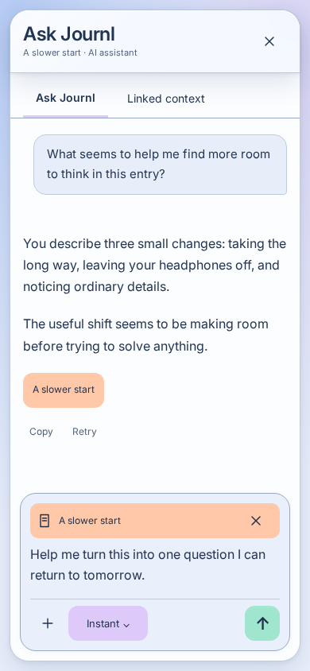
SHA256 25433a9fed7b6657d753112827442459681d96482e0b2cf54ef5147cea9e83c1

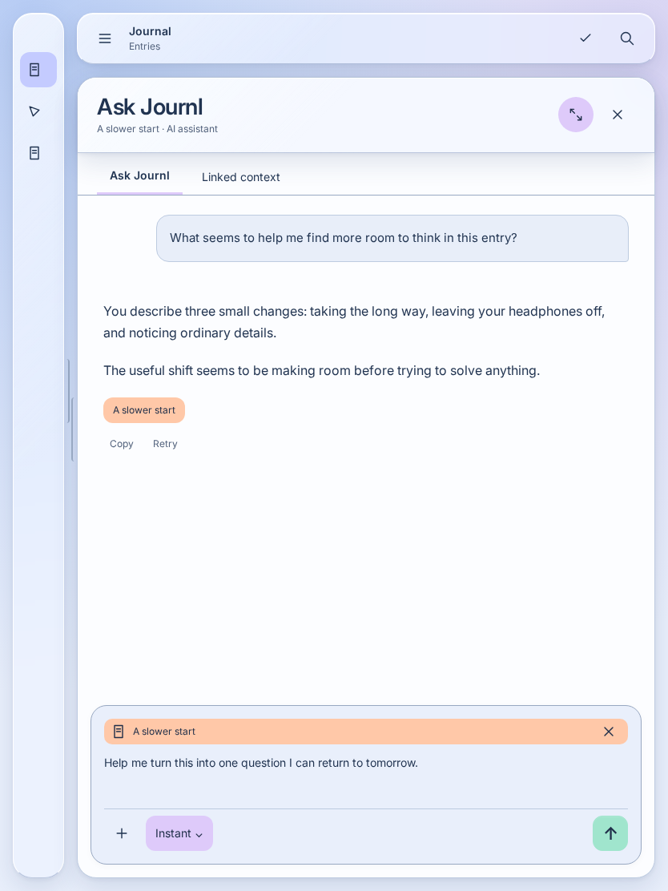
SHA256 5a7d0b55e3d8743bd2b87461eeaef5f788f21de718dc415070bb6185a7345ad5

SHA256 f2de02c66d79775d741b90e781616b5c2b19884e0036d49751d705fb1e232bd6

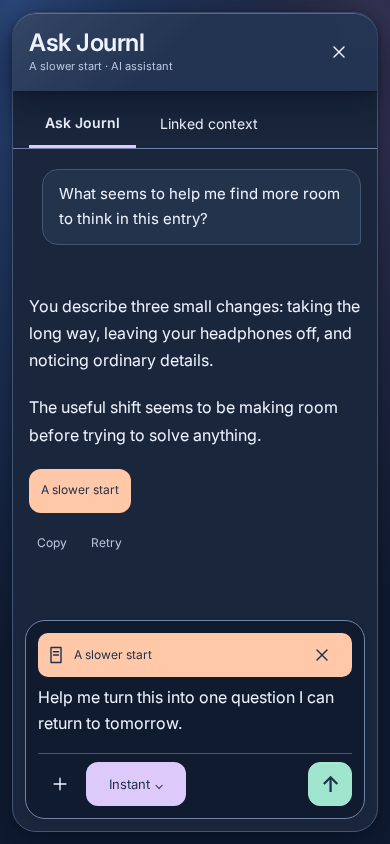
SHA256 0144c8fa5307297b14056fa176f12fda817996b49bfb46ba2dc61a47f3a7d095

SHA256 045f65302eb5a8022bbc889f43e0ebab880d44e3cfa668e740017244a8a78e0a
A slower start
chat-expandedActions and implementation pointers
+ New page · Journal · Explore · All pages · ⌄ · Reflections · › · Reading · Turn into a page · Explore this note · Ask Journl · Linked context · A slower start · Copy · Retry · Instant ⌄ · ↑ · Entries · Timeline · Nov 16 · History · Close · Instant · Thinking
apps/web/src/components/assistant-ui/thread-components.tsxapps/web/src/components/assistant-ui/thread-sources.tsx

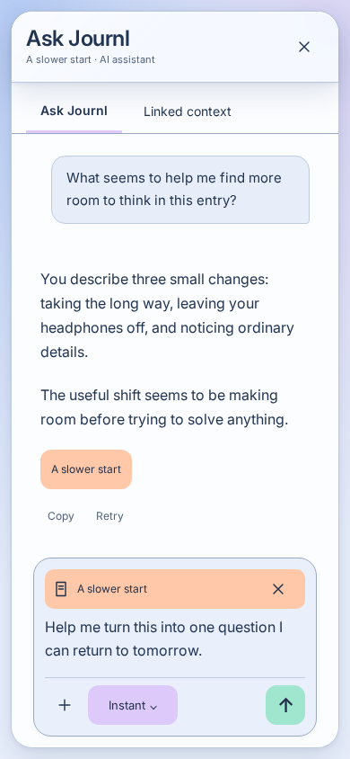
SHA256 e2d635fdd2e52aae2038de9c420e89e817e1c7b7ab23f59c52d29c88101413b6

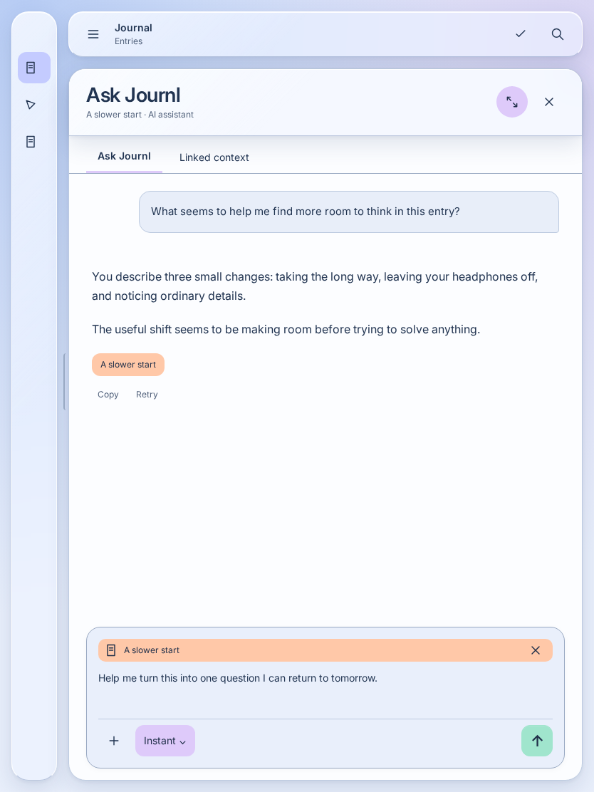
SHA256 e111053392bc19caf7eb619eb1a514935a8b178730c8da26c56c60933ff18913

SHA256 3cf0e44d6555f9c59486c8c5ed20cb125ac8714d6994f405519a3658b3f46142

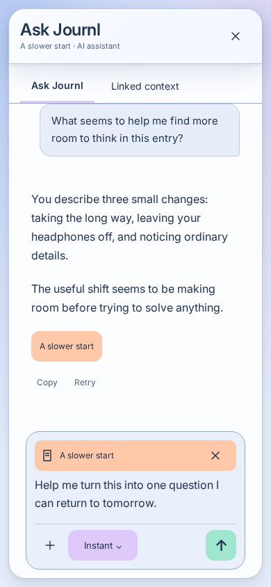
SHA256 4632cb9e9ca164db4f8e432ec0fff461f6061eec79965998db95692640e1eeca

SHA256 f5555354acaf75d6a312c38b75ec6b3a99a8afbaf936ff663cb3eaf93bfead53

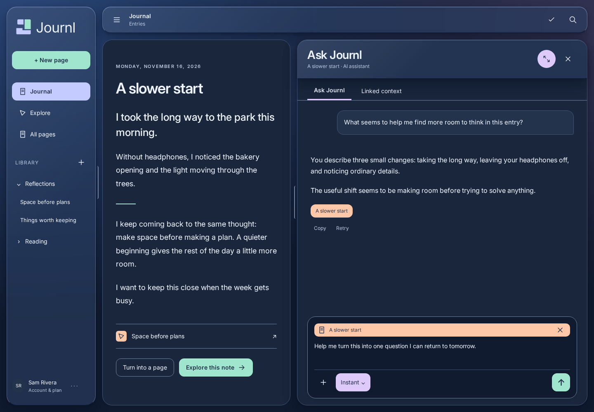
SHA256 cba1ceff88b7fc168bce28b8a42950af18999c5956ddf3da5db16346b55a4d2b

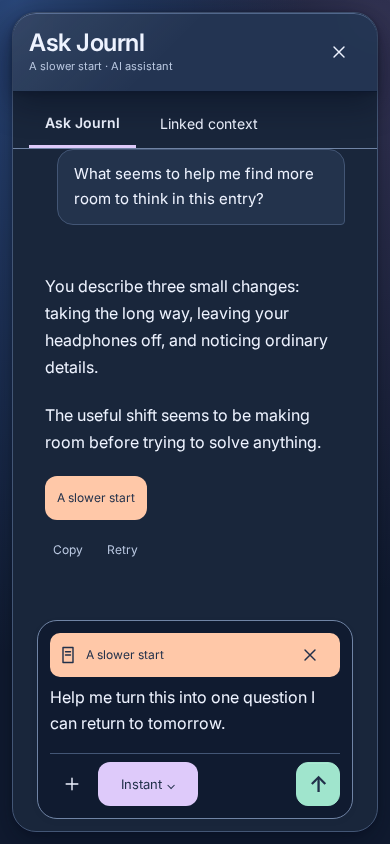
SHA256 5e71d8b51701a76113f9331dbf6dfcc1361420c55a0b488b0ea96ba61c85ef77

SHA256 26c2dfb48b133e93048ea077728cef4e050fb71f2e793cf102cb216f96e83917
A slower start
chat-welcomeActions and implementation pointers
+ New page · Journal · Explore · All pages · ⌄ · Reflections · › · Reading · Turn into a page · Explore this note · Ask Journl · Linked context · Attach a note · Instant ⌄ · ↑ · Entries · Timeline · Nov 16 · History · Close · Instant · Thinking
apps/web/src/components/assistant-ui/thread-components.tsxapps/web/src/components/assistant-ui/thread-sources.tsx

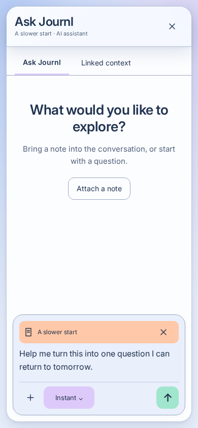
SHA256 2edce5805dda710242981f7fd858f1264ce0415d9df56d99d3fbf3c481110de1

SHA256 842923210ae62bef0ad856049a146bf0447b4c8848692aa094ecef9b344cda3e

SHA256 dc8903fd1bc528c8ab2512395b622f48f051006bf14496a441618a2481fe8fe6

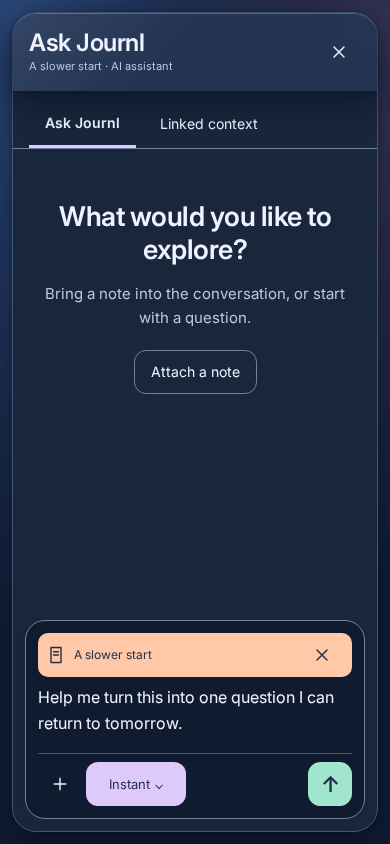
SHA256 e0b07493ea29502be53256bf8bda36d9b04e1fc0d1f1ab7646f72430d93a0b77
A slower start
chat-contextActions and implementation pointers
+ New page · Journal · Explore · All pages · ⌄ · Reflections · › · Reading · Turn into a page · Explore this note · Ask Journl · Linked context · Open page · Instant ⌄ · ↑ · Entries · Timeline · Nov 16 · History · Close · Instant · Thinking
apps/web/src/components/assistant-ui/thread-components.tsxapps/web/src/components/assistant-ui/thread-sources.tsx

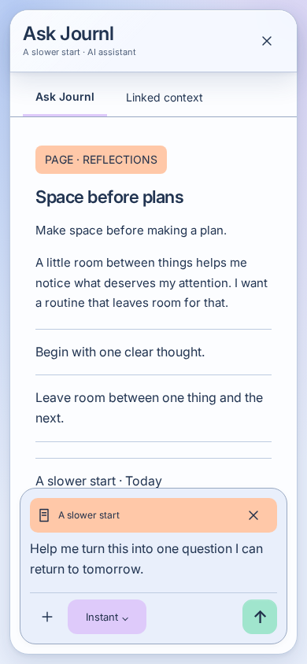
SHA256 4d8d0cf8f7d65fee250ad558ed1b093bfcc528ec317fadc89492da557289f344

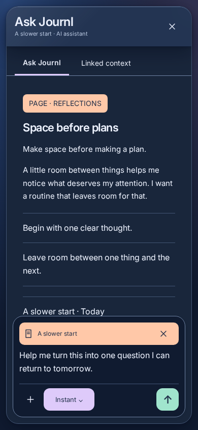
SHA256 489e54bb964eb12418f8518c3c6b5db05fa7a7225a35ff1e14c9c0d39def7565

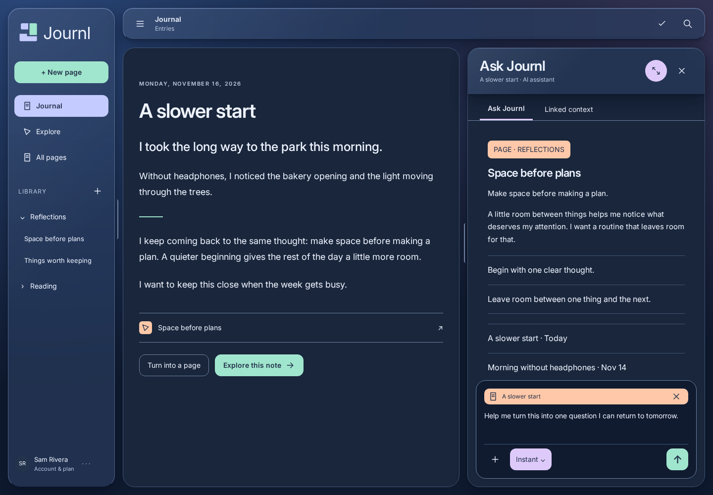
SHA256 9353fc5490f7d0223ad95762cd03328e366c6e7805f0aec88195cc9d16e7432a

SHA256 85c8998f0c41b7028016fb7360e8a3ff0ab32618636a0c4637d413648bc002cb

SHA256 d2453ede92a441c82e409988c0a25167782bcd12059f59f6eb3d1bf6d0bfc912

SHA256 eb5c402dd3eab1677aea37360957b1d15a988c9733f6a35812fb5f54af139ea2

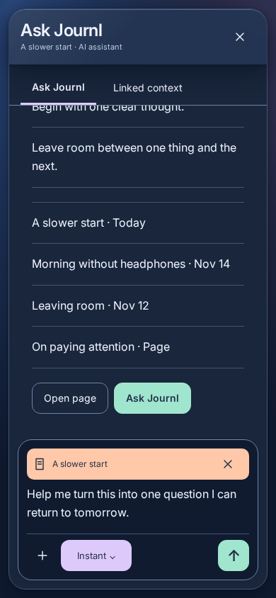
SHA256 ca342777910678fb316431f1cd450254a7d6b68812af641baf055a0fb7561edf

SHA256 04e9a98e158c22efe86571022f427e3649a2ff5fd6feb255a555971c3537cc66
A slower start
chat-closedActions and implementation pointers
+ New page · Journal · Explore · All pages · ⌄ · Reflections · › · Reading · Ask Journl · Today’s Journal · Close · Instant · Thinking
apps/web/src/components/assistant-ui/thread-components.tsxapps/web/src/components/assistant-ui/thread-sources.tsx

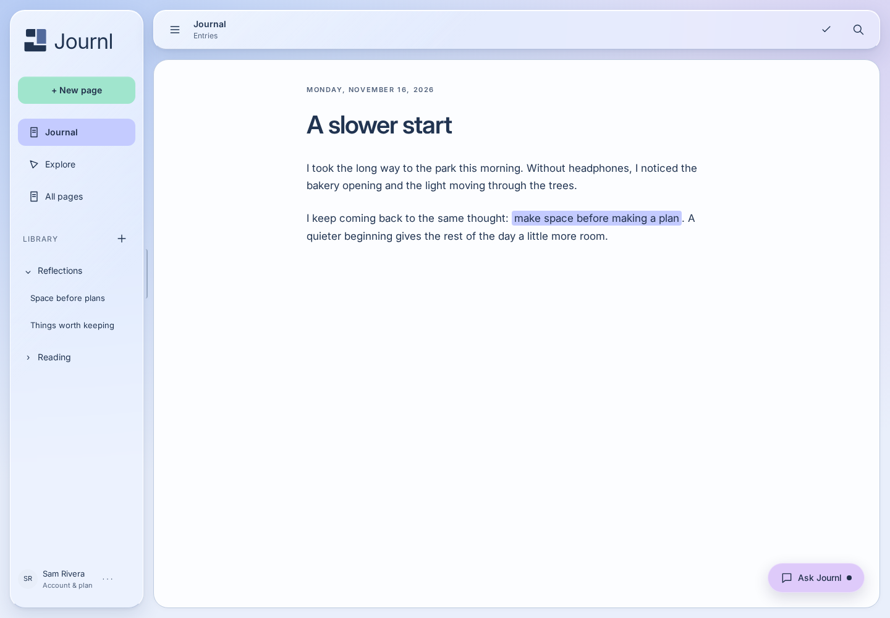
SHA256 d8a14698a814e613e52053167d2634eab498878ef672f2b053182d2fd499b50a

SHA256 49fb664977b50d175e9951f765256d12f8a022e7613c480ae76b9871fe7b9ee0

SHA256 ee0d5ac65806da66ad0e365dcf1802ad798585275dff0eec3c4a0e65cf332561

SHA256 2a16f00753505a7967dc39ebbcf54c21d4e0437d0ffe440d8cd9a6c30432547a
Choose note sources
source-pickerActions and implementation pointers
× · Cancel · Add selected
apps/web/src/components/assistant-ui/thread-components.tsxapps/web/src/components/assistant-ui/thread-sources.tsx

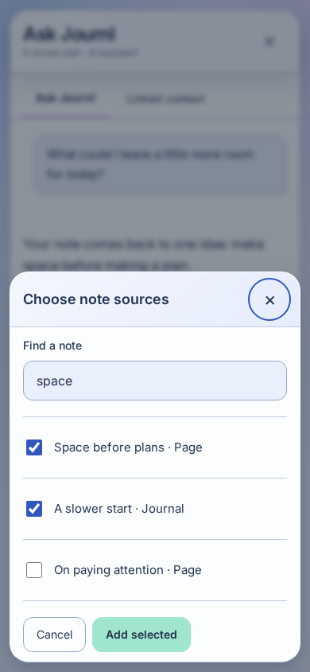
SHA256 b2de79016965ad9f92d1b8f461323f4b46521214c59d20061e9e0a2b9bc106df

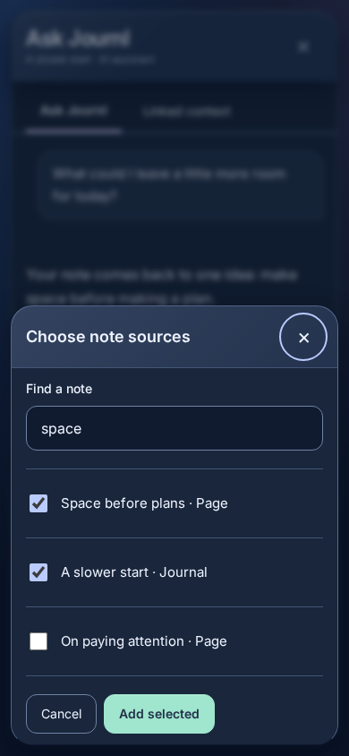
SHA256 fbcfd4385036e6c0939f4c6bb1780b947f924512a75b6ea89e481d35ed8040ba

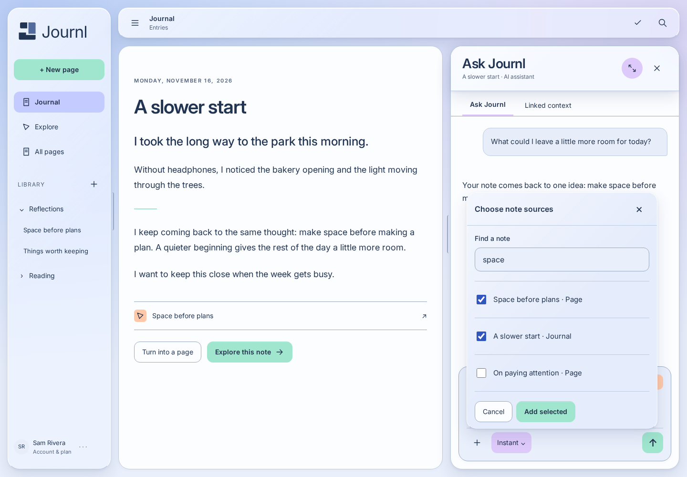
SHA256 7db69c24527f2a5d9e07b381f67654bd559611800339a778d396582f6ab8c20f

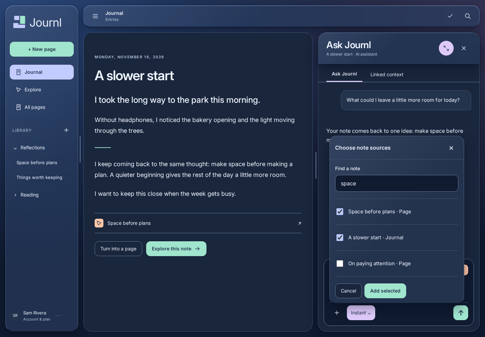
SHA256 ae6413d0d2f467ec733e852e8e5c733f44468390bf1189bf81b8f206e3c9b701
Selected passage attached
selected-sourceActions and implementation pointers
+ New page · Journal · Explore · All pages · ⌄ · Reflections · › · Reading · Turn into a page · Explore this note · Ask Journl · Linked context · Remove selection · Instant ⌄ · ↑ · Entries · Timeline · Nov 16 · History · Close · Instant · Thinking
apps/web/src/components/assistant-ui/thread-components.tsxapps/web/src/components/assistant-ui/thread-sources.tsx

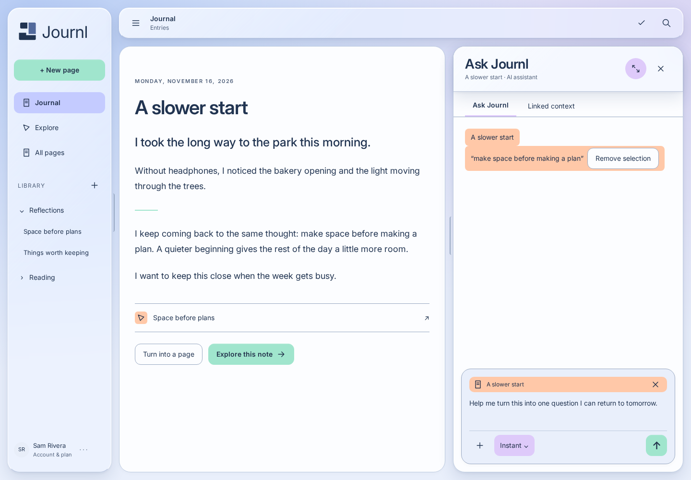
SHA256 4c4a13500b22a91965c54f738e87e7d7c32027764a6cd550e56afea0d5fd984b

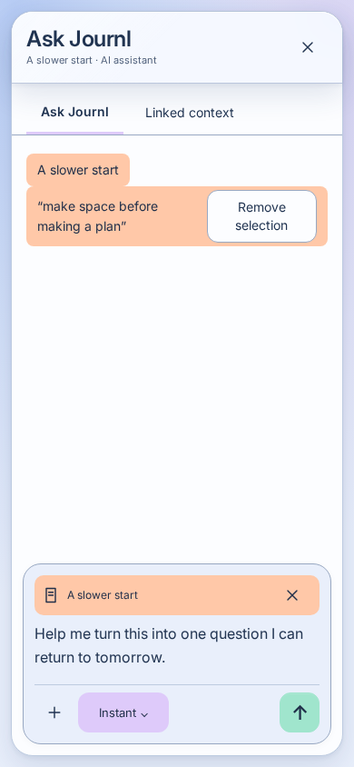
SHA256 fa2eb9dd67f99a77123ea6b6549bd9e9ba851525ce989de136e3fe694e3b9c25

SHA256 cac66a9f904eeedb08e10fcb4db437c3fdbeeb980b538618e4c052118f708285

SHA256 d2c4215a190e26d422c68c57528e2425b1783ed3b20e14ec149470c3c98e3bd0
Conversation sources
source-overflowActions and implementation pointers
× · +2 sources · Space before plans · Remove · Morning without headphones · Remove · Attach note source
apps/web/src/components/assistant-ui/thread-components.tsxapps/web/src/components/assistant-ui/thread-sources.tsx

SHA256 7a611330a14a8ef0364d09e5666c2d0adcd3177192842595fee34a9a61b50097

SHA256 4ffa0a2883f3bfa4ac56c84646671da7711bde83a3c079345e83f676250c6488

SHA256 41e4d35023d2ca5d5dff49c6a36382bab3cfe062ccd0512a325d80d49938b641

SHA256 f7151967dd1ee4dc68992ebdc4ad57a1bdfeabd4d46ab9018d0aaafbfcf33a6b
Source detached
source-removeActions and implementation pointers
+ New page · Journal · Explore · All pages · ⌄ · Reflections · › · Reading · Turn into a page · Explore this note · Ask Journl · Linked context · Instant ⌄ · ↑ · Entries · Timeline · Nov 16 · History · Close · Instant · Thinking
apps/web/src/components/assistant-ui/thread-components.tsxapps/web/src/components/assistant-ui/thread-sources.tsx

SHA256 19ef7215a7b1df1298dc21a14b88797ac4adac251df14cfd8eb4075cd4d9a392

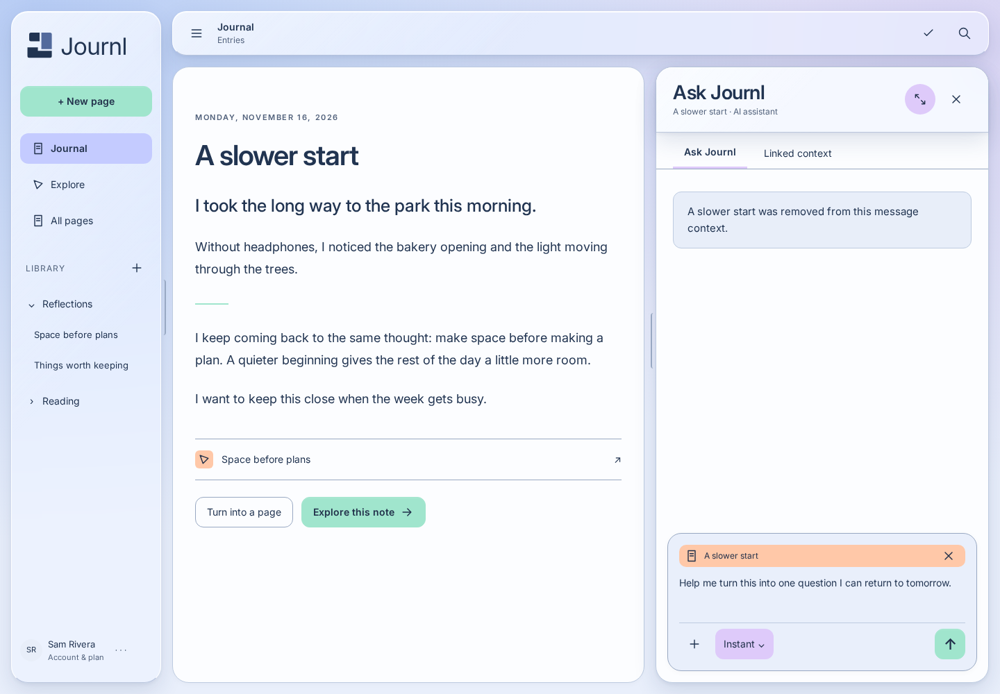
SHA256 e2e9cd8cd816e928c429d547be37510afb3d7310d8a5720f10041a7aafc5c891

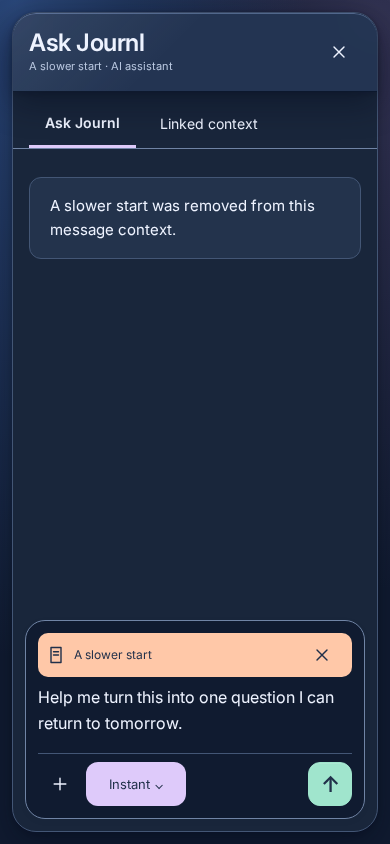
SHA256 2626e39184b7ad9a2564422f540a232ec8b67e9d1c1a83882f0fa96194e82d98

SHA256 659795c15c9ea0917e83827b6d833b7eacde298c0c13b05bbc683710a23da240
No matching notes
source-picker-emptyActions and implementation pointers
× · Cancel
apps/web/src/components/assistant-ui/thread-components.tsxapps/web/src/components/assistant-ui/thread-sources.tsx

SHA256 ca2f504c004bd81f3149ec6add6ef38a9f5a29a13b0687e87e6d1748a8f09184

SHA256 0c47ea9549157017e0644056b18f1b5b75068e61a02038908c35a886d95fe37f

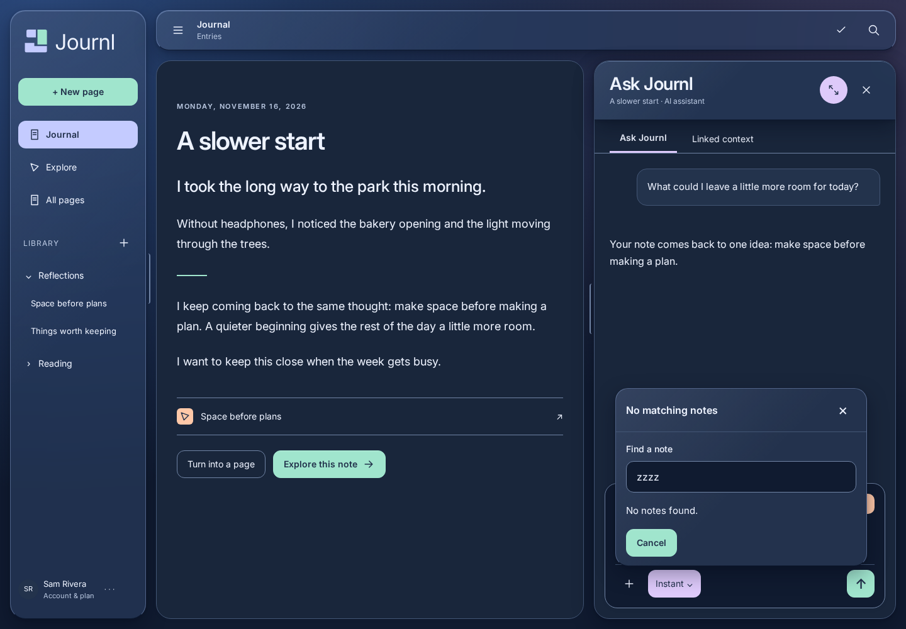
SHA256 d717bdbe1b8878265f3887a47055abb2e3dd23d9c978b48be11562e05438cc93

SHA256 a64f3f96dda9886c76a9f8ed69c4dd942e7e936ca8e3a669a8c224f8a2a77ad7